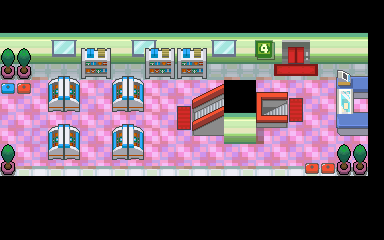
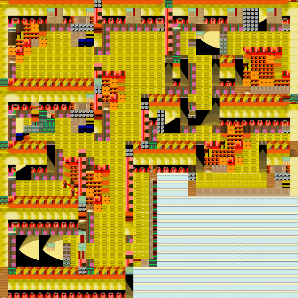

特攻增强剂
宝可梦营养饮料。
获取：玉虹市·商店 ／ 满金市·商店 ／ 阿露福遗迹(26,12) ／ 连接洞(13,16) ／ 火箭队基地(6,23) ／ 铃铛塔(36,8) ／ 漩涡岛(57,28)
用途
宝可梦营养饮料。 提升1只宝可梦的10特攻努力值。
标价 10000 口袋：道具
获取方式
购买

地面隐藏
人物剧情
- 火箭队基地（区域133） · (6,23) · 与坐标处人物交互 · 数量 1 · 地图 · 触发条件待补
- 铃铛塔（区域135） · (36,8) · 与坐标处人物交互 · 数量 1 · 地图｜静态图 · 触发条件待补
- 漩涡岛（区域176） · (57,28) · 与坐标处人物交互 · 数量 1 · 地图｜静态图 · 触发条件待补

数据来源
- 来源文档：out/items.json（
/67） - 表索引 index 0067；内嵌 itemId 67；口袋 ITEMS (id=1)；type 1；hold_effect 0/0；importance 0；unk19 0
- 获取来源文档：encounters_research/out/shops.json、maps_research/out/events/events.json、maps_research/out/scripts/scripts.json
- 获取记录 ID：
shop:0816BCAC:3:10:4、shop:0816BCAC:3:50:17、hidden:1:55:17、hidden:3:107:1、script_item_candidate:std:081BE752:1:45、script_item_candidate:std:081BE981:1:60、script_item_candidate:std:09CD0850:55:15 - 说明文字解码来源：
reference/SAVE_HOME_GAME_DATA.json.charmap
地点地图
共享RGB底图；点击可缩放定位。数字对应本页相关地点，不代表地图上全部事件。
玉虹市

1 特攻增强剂（1,6）
满金市

1 特攻增强剂（22,6）
阿露福遗迹

1 特攻增强剂（26,12）
连接洞

1 特攻增强剂（13,16）
火箭队基地
该地图的原始图块数据不可解码，保留地点与入口导航。
铃铛塔

1 特攻增强剂（36,8）
展开其余 1 张地点地图
漩涡岛

1 特攻增强剂（57,28）